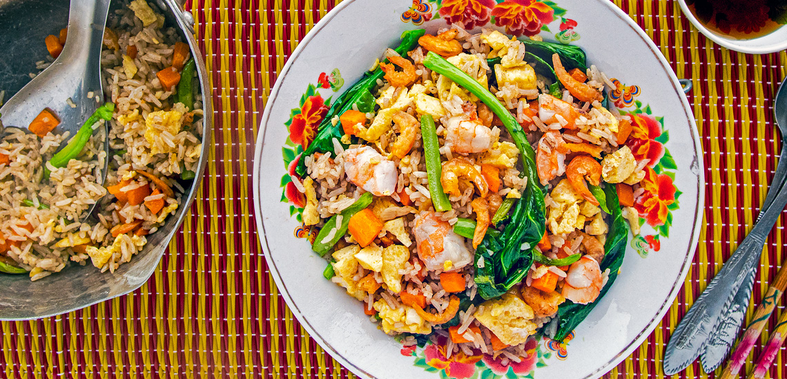

How to Make the Best Bai Cha?

Essential Ingredients for Khmer Fried Rice:
- Base: Day-old jasmine rice (preferred for texture).
- Aromatics: Minced garlic (crucial), shallots, and sliced green onions.
- Protein: Chinese sausage (sliced), pork, chicken, shrimp, or tofu.
- Vegetables: Finely diced carrots, string beans or green beans, and sometimes corn.
- Seasonings: Light soy sauce, oyster sauce, fish sauce, sugar, white pepper, and black pepper.
- Optional Extras: Fried garlic, MSG, or a touch of sesame oil.
- Garnish: Lime wedges, sliced cucumbers, and fresh herbs (cilantro or mint).
Common Preparation Notes:
- Omelette: Often, eggs are fried into a thin omelette, sliced, and placed on top.
- Sausage: Siem Reap sausage or Chinese sausage provides a distinct sweet/savory flavor.
- Fried Garlic: Adding crispy fried garlic to the final dish is common in many variations.
Step-by-Step Cooking Instructions
- Searing the Protein
- Preparing the Omelette
- Aromatics & Vegetables
- The High-Heat Fry
- Seasoning
- Final Garnish
- Serving
Heat a small amount of vegetable oil in your wok over medium-high heat. Add sliced Chinese or Siem Reap sausages (or your choice of meat) and stir until they get some color. Remove the meat and set it aside, leaving the flavored oil in the pan.
Pour beaten eggs into the wok, swirling to create a thin omelette. Cook until just set do not let it brown. Remove, slice into bite-sized strips, and set aside.
Add a bit more oil if needed. Sauté finely diced carrots and beans until they soften slightly. Add minced garlic and shallots, frying for about 30 - 60 seconds until fragrant but not burnt.
Turn the heat to high. Add the rice and the seared protein back into the wok. Use a spatula to break up any rice clumps and toss constantly to coat every grain in oil.
Add your seasonings: fish sauce, soy sauce, oyster sauce, sugar, and white pepper. Stir-fry rapidly for 1 - 2 minutes until the rice is heated through and has taken on a light golden color.
Toss in the sliced omelette and chopped green onions. Give it one final quick toss and remove from heat immediately.
Serve hot with cucumber slices, lime wedges, and fresh herbs like cilantro. Many locals also enjoy it with a side of Khmer sweet chili sauce.
Nutrition
| Calories: 1710kcal | Carbohydrates: 212g |
| Protein: 67g | Fat: 63g |
| Saturated Fat: 20g | Cholesterol: 763mg |
| Sodium: 5099mg | Potassium: 1404mg |
| Fiber: 8g | Sugar: 20g |
| Vitamin A: 15229IU | Vitamin C: 23mg |
| Calcium: 266mg | Iron: 8mg |
from:grantourismotravels
Watch Video How to make Fried Rice Khmer
Back to My Bio Page